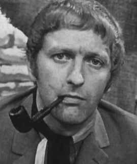
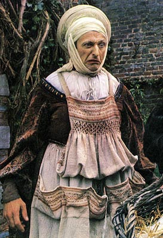
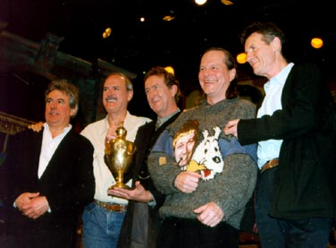

|
Graham ChapmanGraham Chapman (January 8, 1941 - October 4, 1989) When Graham Chapman was three years old, he had the unique opportunity to witness an airplane crash up close and personal. His father, a U.K. police officer, had been called to the wreckage. Young master Chapman wandered unattended through coils of fire and smoke, gawking at body parts and other human remains. Later in life, he'd help create Monty Python's Flying Circus. His contributions to the program as a writer and performer were vicious, insightful, philosophical, homosexual, and universally agreed upon as brilliant. His off-screen life was flamboyant and plagued by alcoholism. Chapman attended many schools during his lifetime, with the original goal of becoming a doctor. At Cambridge, he seized an enthusiasm for performing, and he threw himself into Gilbert and Sullivan, Shakespeare, and on-campus student venues like Footlights. These early years of performing allowed Chapman to cross paths with legendary British comic personalities like David Frost, and sketch comedy groups including The Goons, The Two Ronnies, Cambridge Circus, and Double Take. It was here Chapman first became acquainted with John Cleese. Cleese honestly didn't care for Chapman at first. He found Graham's comedy stylings to be standoffish and abrasive, lacking in precision timing or crafted subtlety. The two men were clearly very different, but they became successful writing partners after overcoming initial reluctance. Chapman's handwriting was described as scruffy, and often he'd show up to work half an hour late. He'd take a quick drink, refer to a medical text or Roget's Thesaurus, and toss ideas around while smoking a pipe. Sometimes he'd pass hours without uttering a single word until just the right moment. Often, it was a word which hadn't been invented yet. The Dead Parrot sketch would have centered around a car instead of a bird, had it not been for Chapman. It was Chapman who served as the original mountie during the Lumberjack Song, and the first cast member to be felled by the ever present 16-Ton weight. Chapman created a suite of confrontational sketches deemed unusable by Python: undertakers who suggest the bereaved consume their deceased, pedophilic priests, and so forth. But it was Chapman's polished fixes and molecular adjustments to troublesome sketches which frequently earned him respect among his peers. Chapman's honesty about his sexual orientation led to a now-famous bit called The Mouse Problem, a sketch involving adult men who dress in mouse costumes and engage in secret cheese-tasting parties. Dressing in drag was commonplace for Python members, but Chapman enjoyed playing somber, straight laced authority figures like policemen or generals. He didn't set out to offend unless it was absolutely justified. In The Meaning of Life, Chapman wrote and appeared in a skit in which a man is sentenced to death for the crime of making sexist jokes. He's given the opportunity to select his own form of execution, and he chooses to be chased off a cliff by a group of topless women wearing crash helmets. He lived with his partner, David Sherlock, a man he stayed with his entire life, taking time out for clandestine sexual affairs. One lover would fly out, another would fly in. Chapman was like a revolving door of sexual excess and experimentation. Following a television interview in which Graham discussed the gay lifestyle, the cast of Monty Python received a letter from an outraged woman. She enclosed several prayers for his salvation and a Bible quote. Eric Idle assured the concerned viewer that Graham had been taken out back, and killed. In 1971, Chapman brought home John Tomiczek, an ailing, runaway teenager from Liverpool. Graham had been trained as a doctor, and he treated John's condition until he was well enough to go home. The boy promptly ran away again. When Graham met John's father, it was decided that John could stay in London as Graham's adopted son, much to the disgust of the local police department. Graham's drinking and excessive lifestyle continued throughout much of Python. By show number twelve, his alcoholism was interfering with production. There were simple, one-line sentences he couldn't deliver without a dozen retakes. In one sketch, he was shaking so terribly he couldn't lie still, exacerbating frustration among cast members. Michael Palin was shocked to discover empty quart-sized bottles of gin in Graham's otherwise empty briefcase - bottles purchased that very morning. Amid concern, Graham was cast as King Arthur in Monty Python and the Holy Grail. It was here that Graham's drinking problem truly spun out of control. There he was: trapped on a Scottish hillside without a drop of alcohol in sight. He experienced daily Delirium Tremens, an alcohol-related psychological condition involving hallucinations and convulsions. Years passed after Python, and Graham cleaned up his act. He quit drinking and pipes. During the filming of Life of Brian, Chapman was arguably the healthiest (and healthiest looking) member of the cast, with an energy truly focused toward making a great film. When the cast performed Live at the Hollywood Bowl, Graham's stage presence was strong, confident, and memorable. Then in 1988, Chapman was diagnosed with cancer of the larynx and spine. He refused hospitalization, and died at age 48, one day shy of Monty Python's twentieth anniversary. Michael Palin and John Cleese were at his side. When the remaining cast members were reunited in Aspen, Colorado for a roundtable discussion, Chapman's ashes were paraded onstage with fanfare and applause. Then Terry Gilliam accidentally knocked the urn over with his foot, and the remains were cleared away with a Dust buster. Rumors circulated that at midnight of New Year's Eve 2000, the ex-Chapman's real ashes were blasted into space by rocket from atop a Welsh mountain. In 2002, Chapman's literary executor unearthed three Monty Python sketches written by Chapman but never performed. They involved a Messiah who's grown weary of people asking to be cured, a man-made germ so large it can drive a tank, and a gay parakeet. |